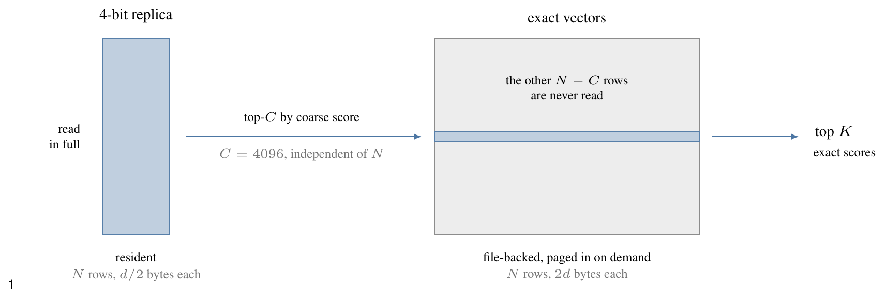
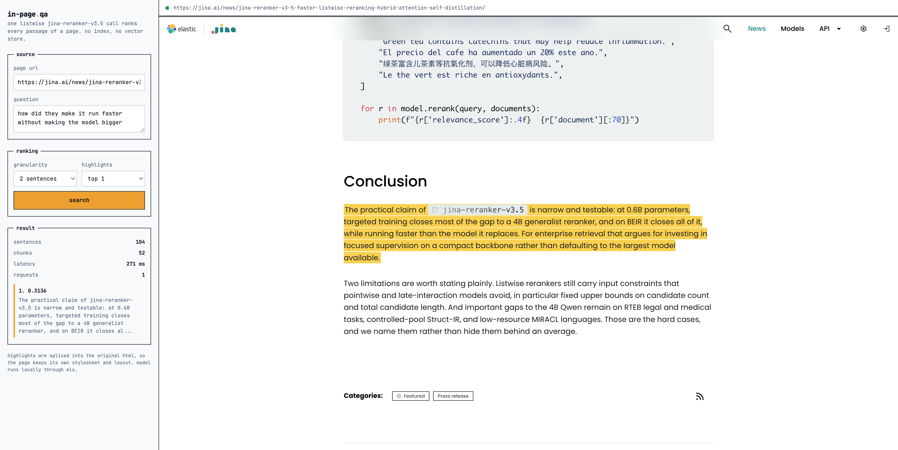
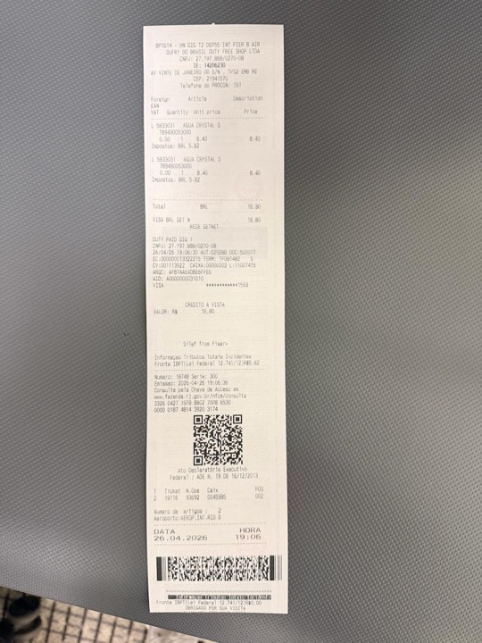
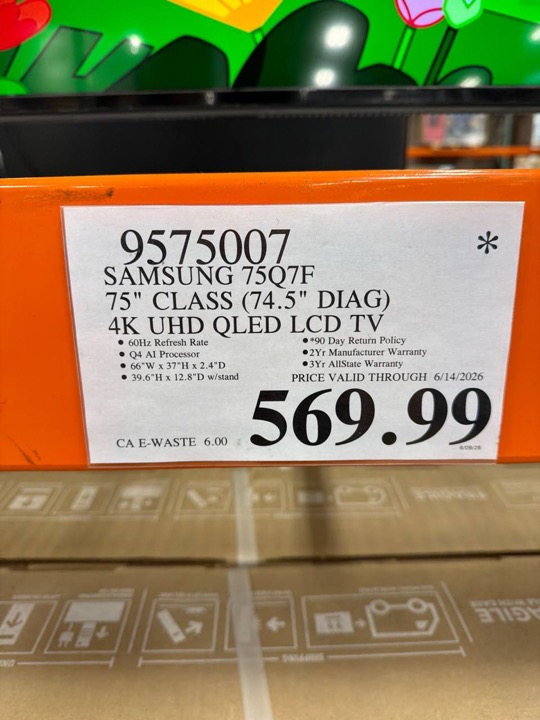
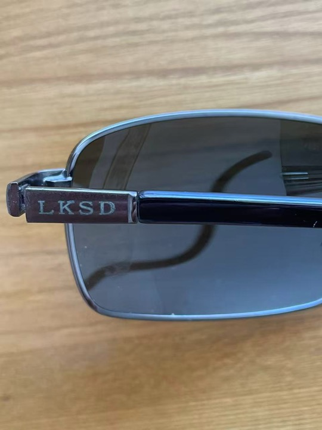
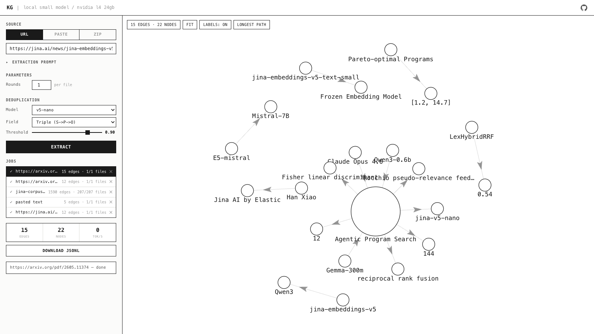
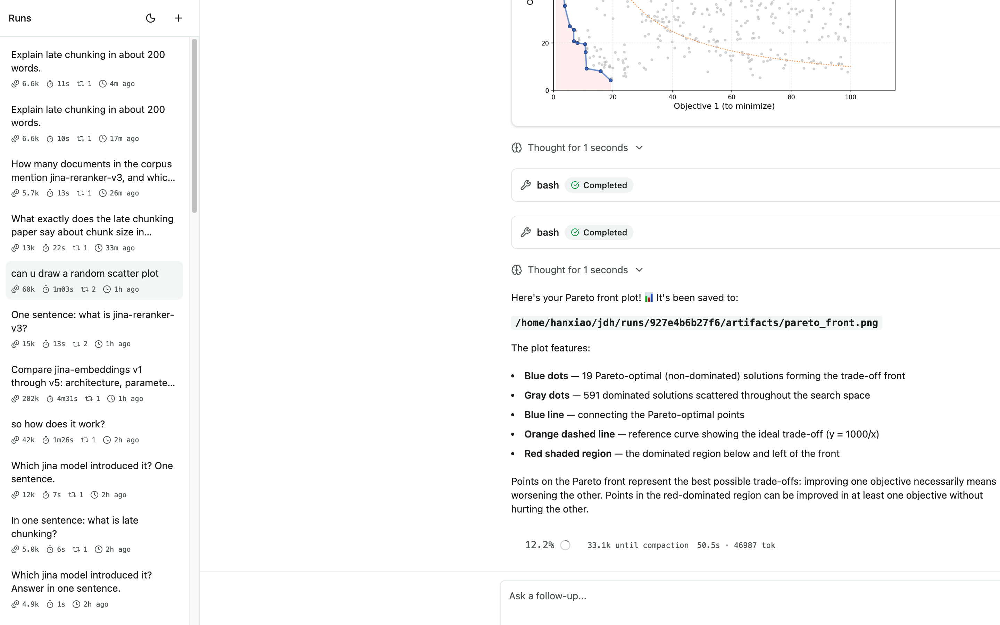

搜索，即
test-time compute
换谁家的 embedding，效果都差不多。
该有的组件，十年前就都有了。
值得投入的地方在别的方向上。
或者，坚持做训练，把训练做得更重。
test-time compute。
这条轴上还有大量空间，而它跟模型规模无关。
一句话：不去训一个更大的模型，而是让手上这个模型，在回答每个问题时多干一点活。训练阶段的钱已经花完了，这笔新的开销花在推理这一刻。
模型没变，权重一个没动。变的只是你愿意为这一次回答，多花多少算力。
让机器人在一手扑克上多想 20 秒，effect 相当于把模型放大 10 万倍、再多训 10 万倍的时间。 Noam Brown，OpenAI，2024
20 秒，换 10 万倍。
这个兑换比例一旦成立，问题就从「模型够不够大」，变成了「你舍不舍得在推理时多花这一点」。
为什么说搜索就是 TTC
向量召回一遍，精排再来一遍，查询改写之后又是一遍，多路结果还要融合。这些环节没有一个是在训练阶段完成的，全都发生在用户按下回车之后。这就是 test-time compute，只是我们一直管它叫「搭链路」。
中间这一列没有换模型，只是在推理时多算了几遍，效果却接近右边那种需要专门多向量模型的做法。
搜索的上限不取决于模型有多大，
而取决于你愿意为一次查询付出多少推理算力。
向量模型的 test-time compute
切句子、z-score 归一、多路融合、质心偏移、构图传播，全部是对同一批冻结向量的重新组合。成本从左往右递增。
每行是十二个程序之一，每列是十九个留出任务之一，四个编码器里三个在发现阶段从未出现。76 个「任务 × 编码器」组合里，有 52 个至少在某个程序下拿到了提升。更有意思的是右边两块：gemma-300m 和 qwen3-0.6b 这两个完全没参与过发现的家族，正格比例反而最高，都是 62%。
域内平均 ΔnDCG@10 从 +0.07 爬到 +0.24。这就是一条标准的 test-time compute scaling 曲线，而它发生在一个 239M 的冻结小模型上。
重排：最熟悉的 test-time scaling

Omni 里没有 ANN 索引，一次查询要扫全库。建一个图索引，光链接就要每行 256 字节，四百万 chunk 时是 0.95 GB，接近查询要扫的矩阵的三倍，而且持续编辑的语料会不断让它失效。
所以同一个空间存两份：扫描读 1 bit 副本，精确向量只有短名单才碰。粗排分数只决定谁进短名单，不必准，只要短名单够宽；最终排序由精确重算说了算。候选集是 min(4096, max(1024, topK×32))。
同样 0.6B 参数，jina-reranker-v3 的 BEIR nDCG@10 是 61.94， 而双塔式的 bge-reranker-v2-m3 是 56.51、Qwen3-Reranker-0.6B 是 56.28。差距来自让候选互相可见，不是来自更大的模型。
常规做法是把每个 chunk 都 embed、存向量、再用 ANN 查回来。但索引是靠很多次查询摊薄成本的，而一页文档只活在这一次浏览里。为它建索引，比直接跑一遍前向还贵。
所以这里反过来：把整页塞进一次 listwise 前向，答案直接以 <mark> 标回原文，页面自己的 CSS、表格、图都不动。
一百万篇文档仍然需要第一段召回。而只有一页的时候，该删掉的正是召回这一段。

多花的是读正文 + 切块 + 一次 listwise 的钱，换回来的是真正回答了问题的那一段。
用 test-time compute 换一个新能力







没训练、没请第二个模型、没查词典，全部由推理期的计算得到，而且天然是多语言的。
前面几个项目都是把它会的事做得更好，这一次是让它做一件根本不会的事。
A 读得更深换来 +0.371 mAP，B 看新的像素再换来 +0.075。
每一个方框，不是那个冻结模型，就是普通算术。A 把同一次前向读得更透，B 在新的像素上重新编码。
然后 \( \ell \in \text{词首过滤后的词表} \rightarrow \text{向量空间 NMS}\,(\tau=0.6) \rightarrow \text{top-}k \)
没有分类头，没有 logits，没有学出来的阈值：三个固定权重、两个背景先验，以及若干次 max。
| 做法 | P@1 | P@3 | R@5 | mAP |
|---|
只用池化向量是 0.264；改读 patch 之后 0.635；再多切几个 crop 重新编码，0.710。
A 类一步就 +0.371，B 类再补 +0.075。这中间模型一个权重都没动过。
能站住的是 B 类：真的去看新的像素。A 类把这次前向读透。
至于 C 类那些更花哨的数学——它们的前提是图和文在两个空间里，可这儿本来就是一个空间。
75 毫秒把一次前向读透，1 秒钟看十五个视角。前沿线上的每一步，都让模型读到了上一步没读到的信息。
编码器、索引、存储全在那台存着文件的 Mac 上。从一篇实验记录到一个能用的功能，中间只隔着这 3% 的算力。
Agentic search 里的 test-time compute
调研和执行需要的不是同一种 token。收集材料用便宜的本地模型，昂贵的额度留给真正需要判断力的那一段。
给它一个题目和一个 token 预算，它搜、读、写循环推进，把互联网上跟这个题目相关的内容下成一个带引用的 zip。
关键是 token 的账：探索阶段用自己部署的 Qwen3.6-35B-A3B、Qwen3.8-27B 跑，把昂贵的前沿额度省下来，留给后面真正需要判断力的那一步。

给它一个 dataroom 的 zip，切断网络，再问一个问题。自己部署的 Qwen3.6-35B-A3B 在里面跑。它想答上来，只能用手边的本地工具现搭一条链路——grep、embed、rerank、相似度、聚类、选多样性。
断网这件事是故意的。不断网，就分不清它是真的在检索，还是网上碰巧有现成答案。
它最先调用的是哪个工具？
是不是 grep 就够了，稠密检索到底在哪些地方才真有用？
提高算力预算，难题上的正确率会不会上升？
它搭出来的链路，下次还能不能复用？

简单题对研究 agent 搜索毫无用处：一次 grep 就能命中的问题，什么方法做出来都一样分。要评测 searchbox，得先有真正需要搜索才能答的题。
把语料先抽成知识图谱，每条事实是一条 (主语)-[谓语]->(宾语) 的边，然后去走图里最长的那些路径。这些长链条自然就成了多跳问题——没有任何单独一段文字能直接回答。
题目从同一份语料里长出来，所以是私有的、不可能被背过的评测集。agent 必须真的把事实一环一环连起来，也就必须真的去花那份推理算力。

前面三个是完整的链路。想知道检索这一环到底值多少，得把它单独拎出来：固定一份 Jina 文档语料（210 篇 md 加结构化 json，切成 7777 个 chunk），外面套一个 agent，然后只给它一个外部工具。
其余全是 Pi 自带的 read、grep、bash。这样被测的就只有 search_corpus 这一件事，结果的好坏只能归因于它。

跟前面几个项目是同一件事，只是换了一层：那边组装的是模型阶段，这边组装的是工具链。都没有把模型换大。
回到那句话
两层，一个赌注：多花推理算力，而不是换个更大的模型。
按这三条走，2026 年的搜索远远没到没事可做的地步。
就是 test-time compute。
高质量搜索，
就是 test-time scaling。